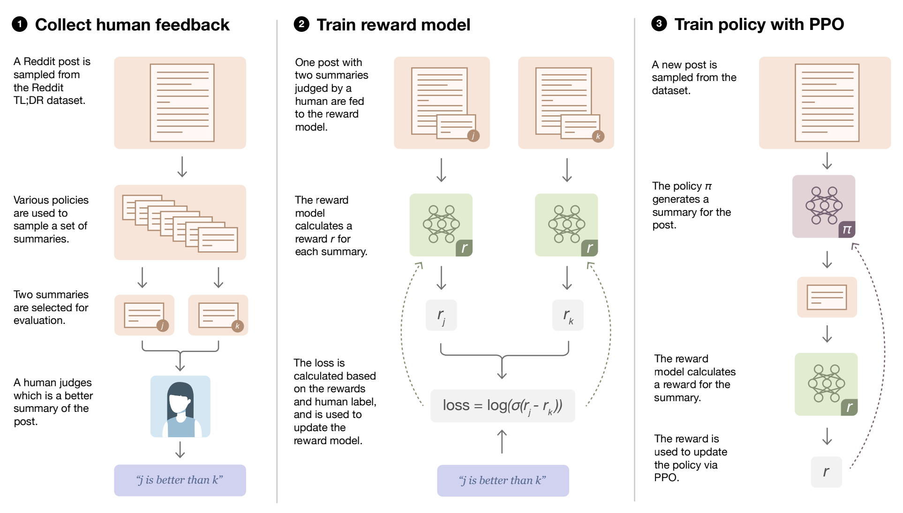

Implementing RLHF with Custom Datasets

https://wandb.ai/carperai/summarize_RLHF/reports/Implementing-RLHF-Learning-to-Summarize-with-trlX–VmlldzozMzAwODM2#fine-tune-with-ppo
Reinforcement Learning with Human Feedback (RLHF) is a popular approach in the field of natural language processing that aims to optimize language models for human preferences directly, rather than solely relying on traditional training methods such as supervised or unsupervised learning. With the recent public release of ChatGPT, RLHF has become a hot topic in both academic and industrial language modeling circles.

In this notebook, we will explore how to implement RLHF using the trlX library and create a custom dataset with Label Studio. By the end of this notebook, you should have a solid understanding of how to implement RLHF with custom datasets, and be well-equipped to continue exploring this exciting area of research.
The notebook will be structured as follows:
- Introduction to RLHF and trlX
- Setting up the environment and installing necessary libraries
- Creating a custom dataset
- Labeling our dataset with Label Studio
- Training a preference model with our custom dataset
- Tune our language model with our preference model using trlX
- References
Let’s get started!
1. Introduction to RLHF and trlX
Implementing RLHF with custom datasets can be a daunting task for those unfamiliar with the necessary tools and techniques. The primary objective of this notebook is to showcase a technique for reducing bias when fine-tuning Language Models (LLMs) using feedback from humans. To achieve this goal, we will be using a minimal set of tools, including Huggingface, GPT2, Label Studio, Weights and Biases, and trlX.
Our aim is to provide the most efficient and straightforward method for creating a pipeline that moves from raw data to a real-world RLHF system. We will walk through the process step-by-step, including an introduction to RLHF and trlX, setting up the environment, creating a custom dataset, labeling our dataset with Label Studio, training a preference model with our custom dataset, and finally, tuning our language model with our preference model using trlX.
Training Approach for RLHF (source): 1. Collect human feedback 2. Train a reward model 3. Optimize LLM against the reward model
2. Setting up the environment and installing necessary libraries
3. Creating a custom dataset
In this section we will create a custom dataset for training our reward model. In the case of fine-tuning a LLM for human preference, our data tends to look like this:
{
"prompt": "The quick brown fox...",
"answer1": "jumps over the lazy dog.",
"answer2": "bags few lynx.",
}The labeler will provide feedback on which selection is preferred, given the prompt. This is the human feedback that will be incorporated into the system. This ranking by human labelers provides allows us to learn a model that scores the quality of our language model’s responses.
In this example, we’ll show you how to create your own dataset. We’ll start with a set of prompts, generate predictions for them using GPT-2, and then have users rank the predictions generated.
Note: Due to the compute limitations of colab, we’ll be using GPT-2 for this notebook. Thus, the quality of our predictions will not refelect much quality. If you have access to more hardware, then you can swap the GPT-2 model with a larger one like GPT-J or others.
/usr/local/lib/python3.11/dist-packages/huggingface_hub/utils/_auth.py:94: UserWarning:
The secret `HF_TOKEN` does not exist in your Colab secrets.
To authenticate with the Hugging Face Hub, create a token in your settings tab (https://huggingface.co/settings/tokens), set it as secret in your Google Colab and restart your session.
You will be able to reuse this secret in all of your notebooks.
Please note that authentication is recommended but still optional to access public models or datasets.
warnings.warn(
config.json: 100%
665/665 [00:00<00:00, 56.6kB/s]
Xet Storage is enabled for this repo, but the 'hf_xet' package is not installed. Falling back to regular HTTP download. For better performance, install the package with: `pip install huggingface_hub[hf_xet]` or `pip install hf_xet`
WARNING:huggingface_hub.file_download:Xet Storage is enabled for this repo, but the 'hf_xet' package is not installed. Falling back to regular HTTP download. For better performance, install the package with: `pip install huggingface_hub[hf_xet]` or `pip install hf_xet`
model.safetensors: 100%
548M/548M [00:02<00:00, 266MB/s]
generation_config.json: 100%
124/124 [00:00<00:00, 13.7kB/s]
tokenizer_config.json: 100%
26.0/26.0 [00:00<00:00, 2.13kB/s]
vocab.json: 100%
1.04M/1.04M [00:00<00:00, 20.1MB/s]
merges.txt: 100%
456k/456k [00:00<00:00, 3.65MB/s]
tokenizer.json: 100%
1.36M/1.36M [00:00<00:00, 20.7MB/s]
Device set to use cuda:0
Truncation was not explicitly activated but `max_length` is provided a specific value, please use `truncation=True` to explicitly truncate examples to max length. Defaulting to 'longest_first' truncation strategy. If you encode pairs of sequences (GLUE-style) with the tokenizer you can select this strategy more precisely by providing a specific strategy to `truncation`.
Setting `pad_token_id` to `eos_token_id`:50256 for open-end generation.
Setting `pad_token_id` to `eos_token_id`:50256 for open-end generation.
{
"prompt": "What is the latest news on the stock market?",
"answer1": "Let the spotlight shine on something big, something that matters. If you haven't picked up on this year's stocks market (which will likely be over for a few months), then you may be missing",
"answer2": "Here are 5 things you should know about the market's stock performance this past week.\n\nMARCH 1 UPDATE\n\nA few weeks ago, The Wall Street Journal said that U."
}
Setting `pad_token_id` to `eos_token_id`:50256 for open-end generation.
{
"prompt": "What is the current state of the economy?",
"answer1": "I'm seeing some of the data back on here, about how much we need to increase our business expenditures. In a recent report, the Congressional Budget Office's Bureau of Economic Analysis estimated that the",
"answer2": "I think we've seen some progress on this. When I came to politics, I heard a lot about how you talk about you and how you were \"taking the fight to Wall Street.\" I"
}
Setting `pad_token_id` to `eos_token_id`:50256 for open-end generation.
{
"prompt": "What are the latest developments in technology?",
"answer1": "Will it ever be able to be incorporated into existing devices?\n\nThis survey started as a conversation about how technology might help people better understand their own personal data. When there's a large body of data,",
"answer2": "This has been the most difficult aspect of my career, due to multiple sources I have already spoken with, the amount of people who knew and had close relationships with the developers and the way they dealt with"
}
Setting `pad_token_id` to `eos_token_id`:50256 for open-end generation.
{
"prompt": "What is the political situation in the Middle East?",
"answer1": "The Arab League, of course, is very concerned about what's going on in the Middle East, and for that, the West is not necessarily going to keep to the model they have,",
"answer2": "On the one hand, we are dealing here with a crisis of the way, a period of uncertainty. But on the other hand, this crisis comes with a price. Our relationship with some"
}
Setting `pad_token_id` to `eos_token_id`:50256 for open-end generation.
{
"prompt": "What are the latest trends in fashion and beauty?",
"answer1": "",
"answer2": "We believe the new trend we tend to see is the beauty trend and the rise of celebrity. A huge amount of young men are getting into fashion because they like the work and the money and"
}
Setting `pad_token_id` to `eos_token_id`:50256 for open-end generation.
{
"prompt": "What are the top travel destinations for this year?",
"answer1": "The travel categories are not broken up by country, but are rather organized into three segments: Australia (where your passport is valid), Germany (where it is valid), and Taiwan, where it",
"answer2": "1. LA, California 2. Phoenix, Arizona 3. Toronto, Ontario 4. Las Vegas, Nevada 5. Atlanta, Georgia 6. New York, New York\n\nIf you found"
}
Setting `pad_token_id` to `eos_token_id`:50256 for open-end generation.
{
"prompt": "What are some healthy recipes for a vegan diet?",
"answer1": "This post is really long, so I wanted to stick to a quick little guide for what you need, so please refrain from commenting!\n\nIf you really want to know what's going",
"answer2": "1. Take a lot of water.\n\n2. Mix flour, vegetable oil, almond extract and cayenne pepper together with a mix bit more lightly. Mix well."
}
Setting `pad_token_id` to `eos_token_id`:50256 for open-end generation.
{
"prompt": "What are the most important events happening in the world today?",
"answer1": "1. The fall of the Roman Empire\n\nOne of the most important events in humanity's history occurred the fall of Rome on December 31, 1446 and during that time the",
"answer2": "A global financial crisis triggered massive international recession, global economic turmoil, unprecedented financial crises in the 1990s, and a global financial meltdown, resulting in a global financial meltdown of unparalleled systemic"
}
Setting `pad_token_id` to `eos_token_id`:50256 for open-end generation.
{
"prompt": "What are some tips for improving mental health?",
"answer1": "One of the many things that people are good at and are working hard on is helping themselves and others get better. It's helpful to know your options.\n\nIn the past, mental health",
"answer2": "1) Get out there and have a conversation. Maybe some people won't talk. Maybe you have friends who don't agree with your mental health. The best thing is if they have experienced anything"
}
You seem to be using the pipelines sequentially on GPU. In order to maximize efficiency please use a dataset
Setting `pad_token_id` to `eos_token_id`:50256 for open-end generation.
{
"prompt": "What are the best ways to save money for retirement?",
"answer1": "What types of investments need to have their own annual accounts?\n\nDo you find it essential to set up a account plan to help you make your own decisions on what to invest in",
"answer2": "First, there is a lot of great information online about how to pay for your retirement. This post has lots of links, as well as some great tips that will help you decide if"
}
Setting `pad_token_id` to `eos_token_id`:50256 for open-end generation.
{
"prompt": "What are some popular new books or movies?",
"answer1": "A very low number of books are sold digitally (as well as on social media sites) but most TV and radio shows (including many documentaries on film) have been available for a couple of years",
"answer2": "You've got to make them in real time. Just keep repeating the idea -- if a book gets more hits then it's getting more books to make. Let yourself get a few books to read by the"
}
Setting `pad_token_id` to `eos_token_id`:50256 for open-end generation.
{
"prompt": "What are some effective ways to reduce stress?",
"answer1": "(What you'll need\n\nIn short - Stress is something you're all about because of the actions and thinking that your system takes. The easiest way to reduce stress is to avoid it, take steps",
"answer2": "Well, it's easy to find those simple, but powerful ways that stress can actually work well in the face of adversity \u2014 things like that:\n\nWhen I was in high school, I"
}
Setting `pad_token_id` to `eos_token_id`:50256 for open-end generation.
{
"prompt": "What are the latest developments in artificial intelligence?",
"answer1": "How are the companies in the field working to improve our understanding about the nature of information?\n\nIn our research, we focused on research and development by researchers, especially those who may be more",
"answer2": "On the frontline of AI and beyond, Artificial Intelligence has been on the offensive for decades. Some of the most important advances in this field were first introduced in the 1960s and have been observed"
}
Setting `pad_token_id` to `eos_token_id`:50256 for open-end generation.
{
"prompt": "What are some top-rated restaurants in your city?",
"answer1": "In order to choose the right restaurant, we rely on the following criteria:\n\nYour area's reputation;\n\nYour staff's skills;\n\nIn all cases, you'll",
"answer2": "Let us know in the comments!"
}
Setting `pad_token_id` to `eos_token_id`:50256 for open-end generation.
{
"prompt": "What are the best ways to stay fit and healthy?",
"answer1": "In an article of the \"What Are You Doing at Work?\" category, FitIQ explained how to keep up with your body when it comes to exercise:\n\n\"To help you",
"answer2": "Find out with our simple answers, designed by a fitness enthusiast who doesn't hate anything but fitness!\n\nIf you know what exercises you'll need, you should try. Here on the Fit"
}
Setting `pad_token_id` to `eos_token_id`:50256 for open-end generation.
{
"prompt": "What are some tips for successful entrepreneurship?",
"answer1": "When your own business is first entering the market you might receive a few tips, especially if you are setting a goal.\n\nWhat are some tips for successful entrepreneurship? The sooner your goal is reached",
"answer2": "1. Avoid marketing scams\n\nIt has been said that you should NEVER advertise in print. It's pretty obvious that you need a professional if you don't want to get your clients to write about"
}
Setting `pad_token_id` to `eos_token_id`:50256 for open-end generation.
{
"prompt": "What are some effective ways to improve productivity?",
"answer1": "What makes a good productivity manager? It is a decision made from within your organization that is made more often than not based on your experience rather than simply based on your own ideas, which are generally",
"answer2": "The productivity gains of the following three items can help people gain more productivity:\n\nIncreased focus on the task at hand. By increasing the amount of time in which they spend focused thinking about the"
}
Setting `pad_token_id` to `eos_token_id`:50256 for open-end generation.
{
"prompt": "What are the latest developments in climate change research?",
"answer1": "Read more\n\nDavid Brown, chairman of the IPCC, said some recent changes to the science, such as its analysis of the role of ocean warming due to human greenhouse effects, \"can only be",
"answer2": "Are we going to change that? What is the link between the various science communities being informed about the climate crisis? What are the causes of the problems we're facing? What needs to be done to"
}
Setting `pad_token_id` to `eos_token_id`:50256 for open-end generation.
{
"prompt": "What are some top-rated TV shows or movies on streaming services?",
"answer1": "We love sports sports, but we're always looking for more good sports programming. It's usually a combination of great sports programming and great entertainment. The best sports programming has",
"answer2": "Comedy Central (CBS)\n\nComedy Central is the only cable channel in North America where you can catch up on current episode time and date from various networks."
}
Setting `pad_token_id` to `eos_token_id`:50256 for open-end generation.
{
"prompt": "What are some fun activities to do on weekends?",
"answer1": "I work in the morning in the coffee kitchen, watching as girls and boys come to pick up their tea.\n\nWhere can I get my supplies?\n\nThere is no direct bus",
"answer2": "Share them with us at Facebook.com/#!/TravisBurdette @WUWTBruz\n\nRead more: [FULL LATEST ARTICLE]"
}
Setting `pad_token_id` to `eos_token_id`:50256 for open-end generation.
{
"prompt": "What are some effective ways to manage time and prioritize tasks?",
"answer1": "Do you have any tips on how that might help with scheduling and/or time management in a business? If so, what strategies, actions or tips do you use? Let us know in",
"answer2": "Where do we start, etc.? Where do we begin, etc.?\n\nIt's a complex question, so there are a couple important things to consider:\n\nTime\n\nTime"
}
Setting `pad_token_id` to `eos_token_id`:50256 for open-end generation.
{
"prompt": "What are the latest trends in home decor and design?",
"answer1": "Let us know.\n\n\nThe Best: For its long-standing mission of supporting home furnishings, The Woodlands is home furnishings creator, design editor for the website. Woodland's",
"answer2": ""
}
Setting `pad_token_id` to `eos_token_id`:50256 for open-end generation.
{
"prompt": "What are the best ways to develop a successful career?",
"answer1": "Many career paths consist of an individualization of a career process. There are two approaches which may help you to get there\u2026\n\nYou can pick out specific opportunities or take an optional",
"answer2": "And when can I start building more? The process starts with a few basic questions. Do you want to learn anything new? If not, what do you prefer to learn or do when you do"
}
Setting `pad_token_id` to `eos_token_id`:50256 for open-end generation.
{
"prompt": "What are some popular new products or gadgets?",
"answer1": "There has been a long talk at CES 2014 that the future of devices is in the hands of new developers. The point being that, as in many industries, one of the primary benefits from being",
"answer2": "There are some popular new devices that we are working on that bring something new to the Tablets. For example, as mentioned previously:\n\n\nIn order to connect tablets to the mobile gaming app"
}
Setting `pad_token_id` to `eos_token_id`:50256 for open-end generation.
{
"prompt": "What are some effective ways to improve communication skills?",
"answer1": "The following is a list of examples of a general topic that all should address. Be patient when speaking about individual communication skills.\n\nPractice Your Own Businesses\n\nYour career and",
"answer2": "How to: Learn to focus on your communication when the world around you is constantly shifting, and at times you are constantly learning so you don't need to stop.\n\nOne or more"
}
Setting `pad_token_id` to `eos_token_id`:50256 for open-end generation.
{
"prompt": "What are some tips for successful relationships?",
"answer1": "One of the most important things you should know when choosing to have a relationship with someone is that you should never be a \"couple who just loves each other for a day\".\n\nIf you have an",
"answer2": "We all know that men are often the best men, but there's no doubt that women are most successful when they're good at their jobs. The job that pays the highest paying job can give you"
}
Setting `pad_token_id` to `eos_token_id`:50256 for open-end generation.
{
"prompt": "What are the latest developments in space exploration?",
"answer1": "The U.S. has spent more than $4 trillion in space exploration spending over the last 40 years, which includes the use of commercial spacecraft, space stations and space shuttles. Space",
"answer2": "I am thrilled that the ISS is on the move to the U.S., along with the SES and ISS. We are doing the most exciting things possible using space. NASA has shown that"
}
Setting `pad_token_id` to `eos_token_id`:50256 for open-end generation.
{
"prompt": "What are some top-rated online courses or certifications?",
"answer1": "The major online programs for a bachelor's degree typically provide a degree from a private institution\u2014usually in finance. Most programs, especially those funded by federal funding, offer only one online",
"answer2": "If you want to learn the business of finance, you need to have a good one.\n\nHere are seven of the best things you can do in the finance business in 6 months."
}
Setting `pad_token_id` to `eos_token_id`:50256 for open-end generation.
{
"prompt": "What are some effective ways to improve public speaking skills?",
"answer1": "There are many ways to improve public speaking skills. To start, ask yourself when you have used a word or phrase. Can I use it for the context you like better than your preferred",
"answer2": "There are many ways an entrepreneur could improve their public speaking skills. For example, start early with a good public speaking strategy that includes:\n\nUsing a wide range of media"
}
Setting `pad_token_id` to `eos_token_id`:50256 for open-end generation.
{
"prompt": "What are the latest trends in digital marketing?",
"answer1": "\"I'm talking about the business models\"\n\nFor most industries, media consumption is the main drivers of advertising revenue. However, not many companies focus just on targeting new audiences. Advertis",
"answer2": "The data is based on hundreds of studies and several thousand individual surveys. Here's a brief update on today:\n\nWhen it comes to digital marketing, it seems that consumers are increasingly consuming data from a"
}
Setting `pad_token_id` to `eos_token_id`:50256 for open-end generation.
{
"prompt": "What are some fun and creative DIY projects?",
"answer1": "Check out this post.",
"answer2": "Let's start with the DIY project of creating a simple 3D printed wooden bar. A bar is created by placing a wooden handle and a wire, then placing a wire in the bottom of the"
}
{
"prompt": "What are some effective ways to improve leadership skills?",
"answer1": "1. Encourage people to stay accountable to themselves\n\nWhen leaders behave themselves in a negative way, people often don't want to do things the way they wanted to do, they want",
"answer2": "To get to the bottom of leadership skills questions, in this post, we're going to use the most basic definitions for leadership in a career path (based on my personal experience):"
}4. Labeling our dataset with Label Studio
Now that we have generated some examples, we will label them in Label Studio. Once we have the results of our human labels, we can export the data and train our Preference Model.
First, we can start Label Studio following the instructions here.
Once we have label studio running, we can create a new project with the Pariwise Classification template. The templates themselves are really flexible, so we’ll do some minor edits to make it look a little nicer. The configuration for this template is shown below.
<?xml version="1.0" encoding="UTF-8"?>
<View>
<Style>* { box-sizing: border-box; margin: 0; padding: 0; } body { font-family: 'Roboto', sans-serif; line-height: 1.6; background-color: #f0f0f0; } .container { margin: 0 auto; padding: 20px; background-color: #ffffff; border-radius: 5px; box-shadow: 0 4px 8px 0 rgba(0, 0, 0, 0.1), 0 6px 20px 0 rgba(0, 0, 0, 0.1); } .prompt { padding: 20px; background-color: #0084ff; color: #ffffff; border-radius: 5px; margin-bottom: 20px; box-shadow: 0 2px 4px 0 rgba(0, 0, 0, 0.1), 0 3px 10px 0 rgba(0, 0, 0, 0.1); } .answers { display: flex; justify-content: space-between; flex-wrap: wrap; gap: 20px; } .answer-box { flex-basis: 49%; padding: 20px; background-color: rgba(44, 62, 80, 0.9); color: #ffffff; border-radius: 5px; box-shadow: 0 2px 4px 0 rgba(0, 0, 0, 0.1), 0 3px 10px 0 rgba(0, 0, 0, 0.1); } .answer-box p { word-wrap: break-word; } .answer-box:hover { background-color: rgba(52, 73, 94, 0.9); cursor: pointer; transition: all 0.3s ease; } .lsf-richtext__line:hover { background: unset; } .answer-box .lsf-object { padding: 20px }</Style>
<View className="container">
<View className="prompt">
<Text name="prompt" value="$prompt" />
</View>
<View className="answers">
<Pairwise name="pw" toName="answer1,answer2" selectionStyle="background-color: #27ae60; box-shadow: 0 4px 8px 0 rgba(0, 0, 0, 0.2), 0 6px 20px 0 rgba(0, 0, 0, 0.2); border: 2px solid #2ecc71; cursor: pointer; transition: all 0.3s ease;" />
<View className="answer-box">
<Text name="answer1" value="$answer1" />
</View>
<View className="answer-box">
<Text name="answer2" value="$answer2" />
</View>
</View>
</View>
</View>Next we’ll drag and drop to upload our data, and we’re off!
Once we’re finished labeling our data, we can export it and we’re ready to train our preference model.
Note: If you’re using colab, upload the dataset into the root directory, and your file will be located at a path in /content/..., like /content/project-7-at-2023-04-12-22-24-4c78f924.json.
While I was doing this, I had to click two options like this for me to give human feedback
5. Training a preference model with our custom dataset
Now we’re ready to train our preference model. We’ll create a dataset from our labels, initialize our model from the pretrained LM, and then begin training.
When we finally train our model, we can connect with Weights and Biases to log our training metrics.

6. Tune language model using PPO with our preference model
Once we have our reward model, we can traing our model using PPO. We can find more details about this setup with the trlX libarary here.
accelerate launch --config_file configs/default_accelerate_config.yaml trlx_gptj_text_summarization.pyNote: Due to limitations in the trlX library, training the language model cannot be performed in a Colab environment.
7. References
[Similar human-in-the-loop annotation framework](https://github.com/CarperAI/cheese/tree/main/examples
Antropic harmless RLHF paper and blog about CAI general principles